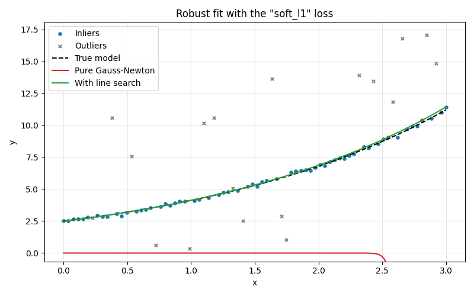
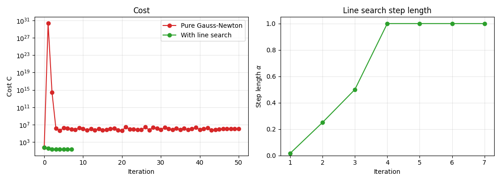

Note
Go to the end to download the full example code.
Robust fitting with and without line search#
This example compares the pure Gauss-Newton solver (default) with the optional
Armijo line search (line_search=True) on a robust fit with the "soft_l1"
loss function and many outliers.
By default, pysolvegn.solve() applies the full Gauss-Newton step
\(\mathbf{J}^T \mathbf{J} \Delta \mathbf{p} = -\mathbf{J}^T \mathbf{r}\) at each
iteration, nothing more. Far from the solution, this step can increase the cost
and the optimization can diverge. The line search shortens the step only when it
does not decrease the cost enough.
Data with outliers#
We fit the exponential model
to noisy observations (noise standard deviation \(0.1\)) where 25 % of the points are outliers (shifted by up to \(\pm 8\)).
import numpy as np
import matplotlib.pyplot as plt
import pysolvegn
true_params = np.array([2.5, 0.5])
noise_std = 0.1
def model(params, x):
a, b = params
return a * np.exp(b * x)
def make_data(seed, n_points=80, outlier_fraction=0.25):
rng = np.random.default_rng(seed)
x = np.linspace(0, 3, n_points)
y = model(true_params, x) + noise_std * rng.normal(size=n_points)
is_outlier = rng.random(n_points) < outlier_fraction
y[is_outlier] += rng.uniform(-8, 8, is_outlier.sum())
return x, y, is_outlier
x_data, y_data, is_outlier = make_data(seed=0)
Robust data term#
The residuals are \(r_j(\mathbf{p}) = a e^{b x_j} - y_j\). The "soft_l1" loss
with loss_scale=0.3 (about three times the noise level) treats the residuals
\(|r_j| \lesssim 0.3\) as inliers and reduces the influence of the larger ones.
See also
The class pysolvegn.Term and the mathematical section of the
documentation for the robust loss functions.
def build_term(x, y):
def residual_function(params):
return model(params, x) - y
def jacobian_function(params):
a, b = params
J = np.zeros((len(x), 2))
J[:, 0] = np.exp(b * x)
J[:, 1] = a * x * np.exp(b * x)
return J
return pysolvegn.Term.from_rJ(
residual_func=residual_function,
jacobian_func=jacobian_function,
loss="soft_l1",
loss_scale=0.3,
)
data_term = build_term(x_data, y_data)
initial_params = np.array([2.0, 0.4])
criteria = dict(max_iteration=50, ftol=1e-12, xtol=1e-12)
Solving with and without line search#
The only difference between the two calls is line_search=True. The history
stores the cost of each iteration and the step length \(\alpha\) chosen by the
line search (\(\alpha = 1\) is the full Gauss-Newton step).
Without line search, the iterates leave the region of the solution: the
exponential overflows, hence the numpy.errstate to silence the floating point
warnings of this run.
with np.errstate(over="ignore", invalid="ignore"):
result_gn = pysolvegn.solve(
data_term,
initial_params,
history=True,
history_details=["cost"],
**criteria,
)
result_ls = pysolvegn.solve(
data_term,
initial_params,
line_search=True,
history=True,
history_details=["cost", "step_length"],
**criteria,
)
for name, result in (("Pure Gauss-Newton", result_gn), ("With line search", result_ls)):
print(f"--- {name}")
print(f"success : {result.success}")
print(f"message : {result.message}")
print(f"iterations : {result.n_iterations} ({result.n_rejected} rejected trial steps)")
print(f"parameters : {result.parameters} (true: {true_params})")
print(f"cost : {result.cost:.6g}")
--- Pure Gauss-Newton
success : False
message : [max_iteration] Maximum number of iterations reached: 50.
iterations : 50 (0 rejected trial steps)
parameters : [-2.940619e-36 3.222747e+01] (true: [2.5 0.5])
cost : 1.21762e+06
--- With line search
success : True
message : [ftol] Convergence achieved: 0 <= F_previous - F < ftol * F with ftol = 1e-12.
iterations : 7 (9 rejected trial steps)
parameters : [2.479087 0.509287] (true: [2.5 0.5])
cost : 22.9579
Important
Without line search, result.success can be True although the result is
wrong: the xtol criterion only says that the steps became small, here at a
point far from the solution with a huge cost. Always check the cost and the
parameters, or use a globalization (line_search=True or damping="lm-diag")
when the initial guess may be far from the solution.
Fitted curves#
x_plot = np.linspace(0, 3, 300)
fig, ax = plt.subplots(figsize=(8, 5))
ax.scatter(x_data[~is_outlier], y_data[~is_outlier], s=14, color="tab:blue", label="Inliers")
ax.scatter(x_data[is_outlier], y_data[is_outlier], s=14, color="tab:gray", marker="x", label="Outliers")
ax.plot(x_plot, model(true_params, x_plot), color="black", linestyle="--", label="True model")
with np.errstate(over="ignore", invalid="ignore"):
ax.plot(x_plot, model(result_gn.parameters, x_plot), color="tab:red", label="Pure Gauss-Newton")
ax.plot(x_plot, model(result_ls.parameters, x_plot), color="tab:green", label="With line search")
ax.set_ylim(np.min(y_data) - 1, np.max(y_data) + 1)
ax.set_xlabel("x")
ax.set_ylabel("y")
ax.set_title('Robust fit with the "soft_l1" loss')
ax.legend()
ax.grid(alpha=0.3)
plt.tight_layout()

Convergence history#
Left: the cost of each iteration (logarithmic scale). The full Gauss-Newton steps increase the cost by many orders of magnitude, while the line search guarantees a decrease at each iteration. Right: the step length \(\alpha\). It is shortened only during the first iterations, far from the solution; near the solution the full step \(\alpha = 1\) is accepted at once and the line search costs nothing (the residuals of the accepted step are reused at the next iteration).
cost_gn = [h["cost"] for h in result_gn.history]
cost_ls = [h["cost"] for h in result_ls.history]
alpha_ls = [h["step_length"] for h in result_ls.history[1:]]
fig, (ax_cost, ax_alpha) = plt.subplots(1, 2, figsize=(11, 4))
ax_cost.semilogy(cost_gn, marker="o", color="tab:red", label="Pure Gauss-Newton")
ax_cost.semilogy(cost_ls, marker="o", color="tab:green", label="With line search")
ax_cost.set_xlabel("Iteration")
ax_cost.set_ylabel("Cost C")
ax_cost.set_title("Cost")
ax_cost.legend()
ax_cost.grid(alpha=0.3, which="both")
ax_alpha.plot(range(1, len(alpha_ls) + 1), alpha_ls, marker="o", color="tab:green")
ax_alpha.set_xlabel("Iteration")
ax_alpha.set_ylabel(r"Step length $\alpha$")
ax_alpha.set_title("Line search step length")
ax_alpha.set_ylim(0, 1.05)
ax_alpha.grid(alpha=0.3)
plt.tight_layout()

Statistics over many datasets#
A single dataset can be lucky or unlucky. We repeat the comparison on 40 random
datasets and count the fits close to the true parameters
(\(\|\mathbf{p} - \mathbf{p}_{true}\|_\infty < 0.1\)), with
Levenberg-Marquardt (damping="lm-diag") as a reference.
n_datasets = 40
methods = {
"Pure Gauss-Newton": dict(),
"With line search": dict(line_search=True),
"Levenberg-Marquardt": dict(damping="lm-diag"),
}
n_good = {name: 0 for name in methods}
n_success = {name: 0 for name in methods}
iterations = {name: [] for name in methods}
for seed in range(n_datasets):
x, y, _ = make_data(seed)
term = build_term(x, y)
for name, options in methods.items():
with np.errstate(over="ignore", invalid="ignore"):
result = pysolvegn.solve(term, initial_params, **criteria, **options)
n_success[name] += result.success
if np.max(np.abs(result.parameters - true_params)) < 0.1:
n_good[name] += 1
iterations[name].append(result.n_iterations)
print(f"{'Method':<22} {'success=True':>13} {'good fit':>10} {'median iterations':>19}")
for name in methods:
median = int(np.median(iterations[name])) if iterations[name] else "-"
print(f"{name:<22} {n_success[name]:>10}/{n_datasets} {n_good[name]:>7}/{n_datasets} {median:>19}")
# sphinx_gallery_thumbnail_number = 2
plt.show()
Method success=True good fit median iterations
Pure Gauss-Newton 5/40 0/40 -
With line search 40/40 40/40 8
Levenberg-Marquardt 40/40 40/40 9
Total running time of the script: (0 minutes 0.376 seconds)